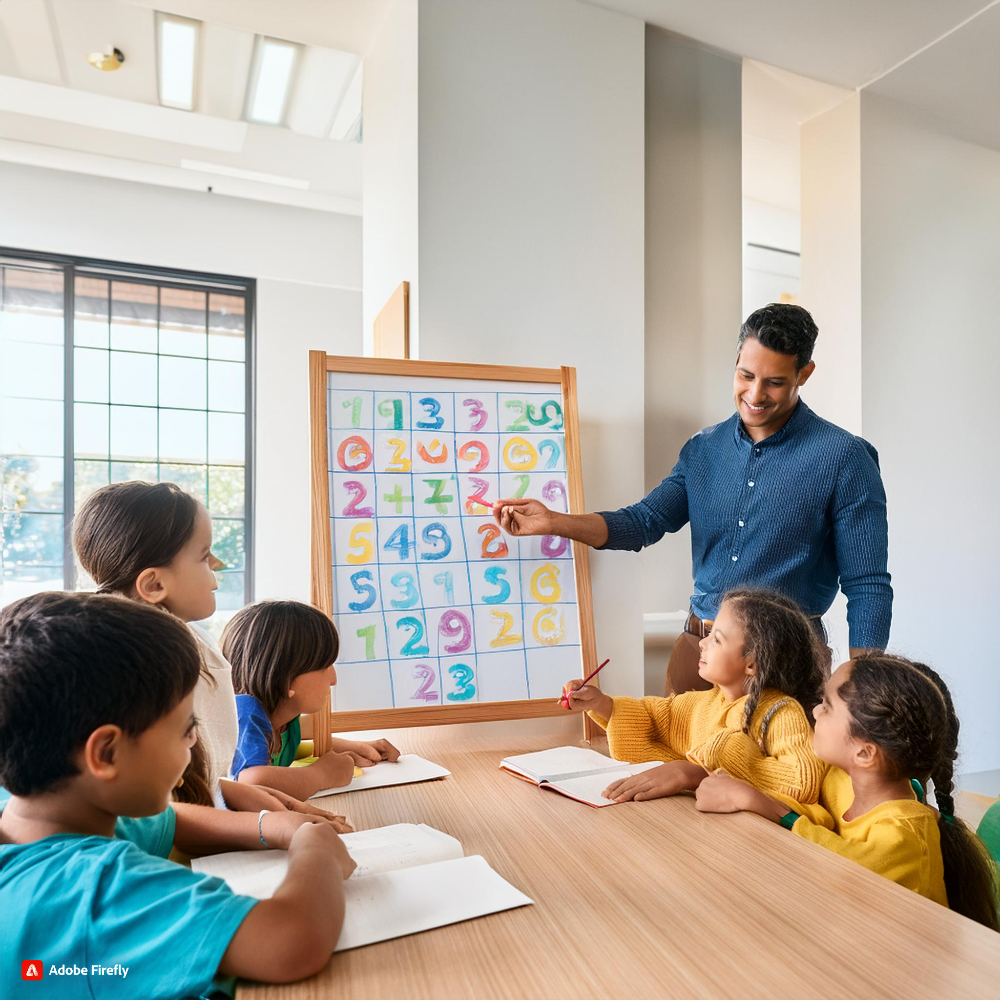

"Mathematics and numeracy in Early Childhood Education"
Introduction and Use of Mathematics and numeracy in Early Childhood Curriculum
There are plenty of fun ways to introduce math in the classroom: songs with numbers and operations, observing patterns in nature, even geometric snack time.Early childhood cognitive development is based on mathematics and numeracy, which gives kids the tools they need to comprehend the world around them (ACECQA, 2022).Early exposure to mathematics fosters the development of childen's logical reasoning, problem-solving skills, and spatial awareness (ACARA, 2017). It also helps kids to recognize linkages, patterns, and structures in daily life. When mathematics is taught creatively, it becomes a potent instrument for invention and discovery, empowering kids to use arithmetic in novels ways and boosting their self-esteem as students (ACARA, 2017).Making mathematics a part of daily life from a young age helps reinforce the idea that math is for everyone.(Alexandra Louis, 2018)

Resources, Materials, and Digital Technologies
Traditional Resources and Materials
- Shapes: Geometric blocks, tangrams, and puzzles that teach shapes, symmetry, and spatial reasoning are referred to as shape puzzles and blocks.
- Measurement tools: To investigate the ideas of length, weight, and volume, use rulers, measuring tapes, scales, and measuring cups.
- Math Games: Math games are card and board games that provide a fun environment for practicing counting, number recognition, and fundamental arithmetic.
Digital Technologies
- Math Apps: Children can learn math with interactive, playful apps such as Mathseeds, Moose Math, or Montessori Numbers.
- Interactive Whiteboards: Resources for cooperative math problem-solving, pattern-making, and shape-exploration among kids in groups.
- Virtual Manipulatives: Virtual manipulatives are tablet or computer-based digital copies of common math tools such as base-ten blocks, fraction circles, and number lines.
Learning Experiences by Age Group
0-2 Years:
- Investigating Patterns and Shapes: To promote early spatial awareness, basic toys and household objects are used to introduce fundamental shapes and patterns.
- Counting Songs and Rhymes: Introduce numnber seqences and rhythm by reciting nursery rhymes or singing counting songs.
- Sorting and Matching:Creating early classification and comparison abilities by giving children the chance to arrange things according to color, size, or shape.
2-3 Years:
- Number Identification Games: Teach children to identify and label numbers with the use of interactive apps or flashcards.
- Shape Hunts:Using games to help children's recognize shapes, parents might have them look for particular shapes around the house or classroom.
- Simle Counting Activities:To incorporate numbers into everyday activities, count playthings like toys, food, or steps.
3-5 Years:
- Pattern Making: To help children's learn about symmetry and sequences, encourage them to make patterns out of stickers, blocks, or beads.
- Measurement Play: Measurement play is a hands on approach to investigating length, weight, and volume concepts using measuring tapes, or scales.
- Math Storytelling: Encouraging children to use mathematical principles creatively by incorporating numbers and shapes into stories or drawings.
6-8 Years:
- Simple Arithmetic Games: Playing games that require addition, subtraction, or multiplication-like card or dice games is an enjoyable way to master basic arithmetic.
- Geometry Exploration: Geometry exploration includes building forms with tangrams and investigating symmetry in artistics endeavors.
- Problem Solving Activities: Giving children's math-based tasks or puzzles to solve where they have to apply thinking and math skills.
Pedagogical Practices and Teaching Strategies
- Promoting Inquiry and Exploration: Establish a classroom setting where children are free to investigate and play while learning mathematical ideas. Urge them to look for patterns and relationships and to pose questions.
- Including Math in Daily Activities: Introduce and reinforce mathematical concepts incontext through everyday activities like cooking, shopping, or playing outside/
- Encouraging Group Work: Team work allow child to collaborate to solve issues, exchange ideas, and pick up tips from one another's approaches in order to promote collaborative learning.
- Using Technology Consciencefully:To create engaging and dynamic learning environments, use digital resources to augment conventional arithmetic exercises, such as interactive math applications or virtual manupulatives.
- Fostering a Growth Mindset:Stress that children may acquire mathematical skills with effort and preseverance, and help them see obstacles as chances to learn.
Early childhood educators can effectively use the mathematics and numeracy curriculum to foster creativity in young children and help them develop a strong foundation in mathematical thinking that will support their future learning experiences, and pedagogical practices (ACARA, 2017).